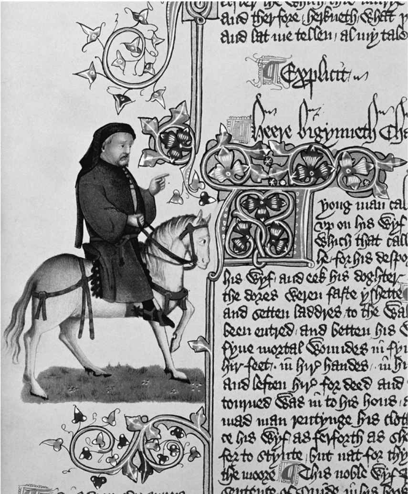

罗马人和布立吞人，撒克逊人和凯尔特人，诺曼人和撒克逊人，用拉丁语（或法语）写作和用英语写作，宫廷和乡村，南方和北方，标准发音和区域性方言，伦敦和外省：英格兰文学就这样在征服者和受压迫者、中央和边缘、权威和反抗的持续斗争中建立起来。14世纪晚期两位杰出的诗人留下了截然不同的文化遗产，上述冲突中的某些部分在其中表现得尤为明显。
杰弗里·乔叟出生于伦敦，他的父亲是一名葡萄酒商。年轻时他曾在法国服军役，其间先是被俘，然后又被赎回。之后，他得到非常有影响力的“出生于冈特的约翰”的资助；他早期最著名的诗篇《悼念公爵夫人》（约1368）就是为了纪念冈特的第一任妻子“兰开斯特的布兰奇”。乔叟的妻子菲莉帕是公爵情妇的妹妹。依靠着这些关系，乔叟获得了一些不错的宫廷职位。14世纪70年代早期，乔叟代表国王出使热那亚和佛罗伦萨，此次行程对他的诗歌创作来说非常重要，因为他发现了意大利文学的精华。据说他有可能见到了意大利文艺复兴时期的代表性作家薄伽丘和彼特拉克，不过大部分学者质疑这种可能性。回到伦敦后，乔叟先是被任命为海关关长，随后又担任皇家建筑工程的督办。

图2杰弗里· 乔叟的肖像，在《坎特伯雷故事集》埃尔斯米尔手稿的边缘位置，旁边的文字是《梅利比的故事》，由诗人亲自讲述
对于乔叟来说，诗歌是他的成就，同时也是他展现自我的途径，是他在宫廷谋求升迁的一种手段，而不是他的职业。诗歌对他的仕途有所帮助，反之亦然：他的早期作品和他在法国的经历保持同步，受到了法国诗歌的影响（最明显的例子是《玫瑰传奇》中寓言化的爱情幻想）；意大利之行激发了他的中期创作，尤其是《特洛伊罗斯与克瑞西达》，乔叟的版本模仿了薄伽丘对于同一题材的处理方式。
乔叟具有宫廷风范，没有民族偏见，会说多种语言，是个具有自觉意识的现代诗人，同时也是个欧洲诗人。他的诗歌和翻译得到贵族阶层的赞赏。他在晚年创作了《坎特伯雷故事集》，以讽刺性的笔调对英格兰的各式人物进行剖析，这些人物分别代表着社会中的不同角色或“等级”。不过，他在这部作品中沿用了之前的创作思路，一方面改造了欧洲大陆的叙事模式，另一方面革新了英格兰自身的文学传统。在包罗万象的单一结构中采用多重叙事，这种写法源自薄伽丘的《十日谈》；骑士的故事改编自薄伽丘的另一部作品；言语粗俗的磨坊主的故事采用法国韵文故事的风格；修士的故事受古典文化影响，将重要人物的堕落视为悲剧；女修道院院长的故事属于动物寓言，这一传统可以追溯到伊索寓言；巴斯妇是个引人瞩目的英格兰式喜剧人物，但是她的开场白和她讲述的故事又涉及一场关于女性角色和言行举止的严肃辩论，这部分内容借鉴了一些思想家的著作，比如圣哲罗姆用拉丁语写的《反对约维尼亚努斯》。
都铎王朝的编年史作家将几位中世纪国王塑造成负面形象，理查二世就是其中之一（理查三世同样如此）。普通民众对他的印象来自莎士比亚的戏剧：他是个自我陶醉的弱者，身边围着一群阿谀奉承的人，任由国家分崩离析，最后在一场政变中被亨利五世的父亲、强硬的亨利·博林布罗克篡夺了王位。在现实中，理查二世时期的宫廷文化极为复杂，就是在这样的环境中，乔叟和他的朋友约翰·高厄为诗歌谋得了一席之地。
在宫廷之外，英格兰人开始发出政治声音，比如1381年的“农民造反”（或者说，“大规模起义”）以及试图让宗教变得现代化和民主化的“罗拉德派”宗教改革计划。威廉·朗格兰的《农夫皮尔斯》（约1370-1390）被认为体现出了这些变化。这首长诗有几个不同版本，并且有几十份不同的手稿，这足以证明这部作品广受欢迎，同时也说明朗格兰——我们对他几乎一无所知——一直在修订这部作品（比如1381年之后的版本删掉了在政治上更具煽动性的片段）。
这首长诗的叙事者在英格兰西部的莫尔文山上入睡。他在幻梦中见到“一方乐土，有许多人生活在那里”：这些人就是英格兰人，作为他们的代言人，他描写了这些人对于圣洁生活的渴望、富人和权贵的腐朽生活，以及耶稣基督为穷人和那些被剥夺了财产或土地的人们所提供的支持。朗格兰代表着英格兰人而不是欧洲人，他使用的方言以及他表达的看法代表着乡村而不是都市，他的作品描写虔诚的生活而不是猥亵的故事，他被认为是乔叟的重要对手。对于参与农民起义的约翰·鲍尔以及16世纪中期那些支持“共和政体”的激进派新教徒来说，农夫皮尔斯这个名字变成了英格兰人顽强抵抗专制统治的代名词，这种专制统治源自权力中心，包括君主制和基督教会两个方面。